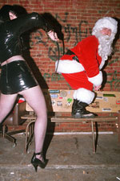

Xmas Hash
Run #923, Dec 21, 2003
Hare: Basket Boom Boom
Scribe: Bad Santa
Location: North Smithfield
Weather: 30's, Clear
Present: Async, Dr WHO, Oozing SD, SESYB, Friar F*ck, Muffalotta, and Non-running wanks Dogmeat, EverReady, KNO, and Jody.
The Run:
‘Twas the hash before Christmas
And up in Glendale
Hare Basket and Santa Jovi were
Sucking down Ale.
Basket in his lab coat,
And Bondo in his cap
Had just settled down to
A boozy pre-hash nap.
The hash was to start
In North Smithfield at four.
But the hare broke the clock;
Santa started to snore.
When out of the phone
There arose such a clatter:
At the start Async and WHO
Were crying: "What is the Matter?"
The hare made excuses
And ran for his truck.
SESYB and Oozing arrived
and said: "What the f*ck!"
The B*tch dressed for the holiday,
And twinkled like a prism.
Oozing put stuff in his beard
(it looked strangely like jism!)
Oozing and SESYB said:
"Such is our luck.
We've got to wait for
Muffalotta and Friar F*ck".
So when the hare finally came
with Ben and Seamus in tow,
Only WHO and Async
A-hashing did go.
With the hare right behind them
Southwest they all sped,
While visions of shigginess
Danced in their heads.
Crossing through Pacheco Park
At Route 5, a check
Led across the Branch River.
But, shiggy? Not a speck!
Meanwhile, back up in Slatersville
Drawn by the noise
Came ‘Lotta and B*tch
With the rest of the boys.
From warehouse to warehouse
Through chemical waste
The FRB’s hope for
Virgin trail was misplaced.
Back on Route 5
Trail led up a slope
Async found a “B”
But was there beer? Nope!
The hare had hung back
To help the rest find the way
(Was it just being helpful,
Or just ‘cause he’s GAY?!)
He made for the BC,
B*tch and Oozing in tow.
But Friar and Muffalotta
Had no clue where to go.
But finally at the Beer Check
They gathered, seven strong,
And drank from the jugs that
The hare brought along.
The hare next directed them
On with a whistle
And to the Homestead they flew
Like the down of a thistle.
The Homestead was crowded
With folks of good cheer,
Midst the lights and the carols,
Things were about to turn queer.
On Async, On Friar
On Oozing, On WHO,
On SESYB, On Muffalotta,
And the hare and hounds too!
They burst through the children
With confusion and clamor
With horn, shouts and whistles
And Ho-Ho-Ho’s with a stammer.
Trail soon led them east
To the back of the park.
Async and Friar left trail
Towards CVS in the dark.
The rest crossed some swamp land
With ice and a stream.
Some shiggy at last?
Not a chance, just a dream!
WHO led up to a highway
North on Route 146!
Against traffic they ran:
More Stupid Hare Tricks!
After crossing the river
They were in Forestdale.
A mark on the riverbank
Led west on true trail.
A brief run through the woods
And then back on the street
To the cars they went quickly
With asphalt-bruised feet.
Muff and Friar were missing
“They can’t be too far!”
said WHO, (as he drove off
To get some Muff in his car!)
At last all were assembled
At the Snake Hill Road house
With EverReady, KNO, Jody
And the hare’s long-suffering spouse.
And Santa Jovi snored on
Too full of good cheer.
A cattle-prod woke him,
He called for more beer!
The circle was joined
The run was assessed
6.9 was the total,
the poor sod did his best!
Hashit was WHO’s
Yet again, one more time.
For rescuing hashers
A definite crime.
A fine meal was had
And the beer kept on pouring
And Santa had to be nudged
Just to keep him from snoring.
The presents were brought out:
Each hasher would come
And sit upon Santa
(Who tried to fondle their bum!
Cookies, books, dildos,
“Adult” connect-the-dots
(Where connecting 68 to 69
always seemed to show tw*ts!)
The fine night was over
We left $5 in cash
A merry Xmas for all,
And for all, a good hash!
On On

Bad Santa